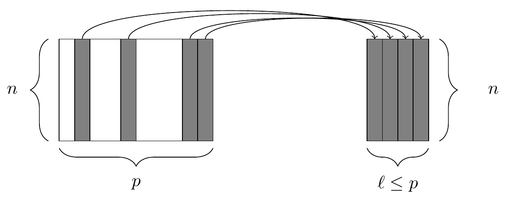
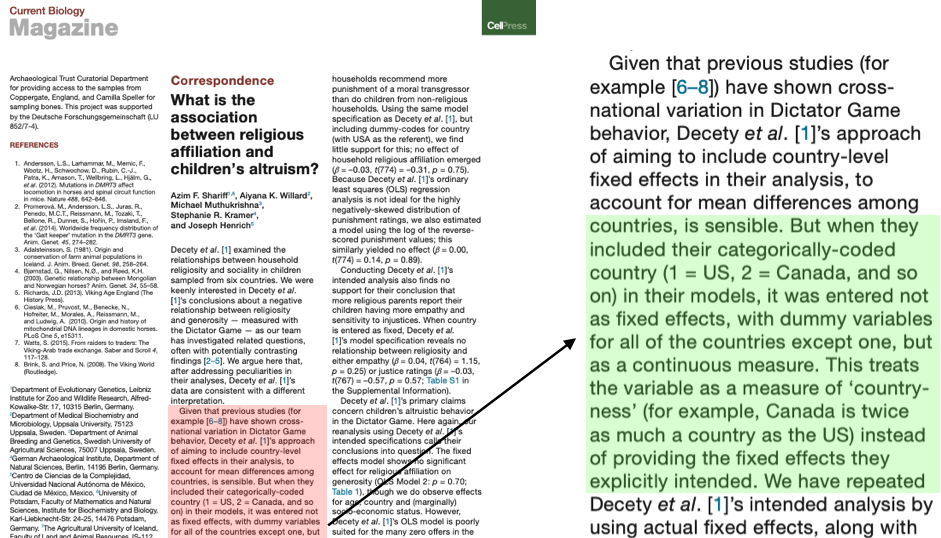

| week | topic |
|---|---|
Tidyverse, EDA & git
BSMM8740-2-R-2024F [WEEK - 1]
Dr. L.L. Odette
Welcome to Data Analytic Methods & Algorithms
Announcements
- Please go to the course website to review the weekly slides, access the labs, read the syllabus, etc.
- My intent is to have assigned lab exercises each week, which will be started during class.
- Lab assignments will be due at 5:00pm sharp on the Sunday following the lecture.
- Lab 1 is due Sunday September 15 at 5pm.
- My regular office hour will be on Wednesday from 2:30pm - 3:30pm or via MS Teams as requested. Please email ahead of time.
Expected Course Topics
Today’s Outline
- Introduction to Tidy data & Tidyverse syntax in R.
- Introduction to EDA and feature egineering.
- Introduction to Git workflows and version control.
Introduction to the Tidyverse
Tidy Data
A dataset is a collection of values, usually either numbers (if quantitative) or strings (if qualitative).
Values are organised in two ways. Every value belongs to a variable and an observation.
A variable contains all values that measure the same underlying attribute (like height, temperature, duration) across units. An observation contains all values measured on the same unit (like a person, or a day, or a race) across attributes.
Tidy Data
Tidy data in practice:
- Every column is a variable.
- Every row is an observation.
- Every cell is a single value.
Tidy Data Examples
# A tibble: 6 × 3
country year rate
<chr> <dbl> <chr>
1 Afghanistan 1999 745/19987071
2 Afghanistan 2000 2666/20595360
3 Brazil 1999 37737/172006362
4 Brazil 2000 80488/174504898
5 China 1999 212258/1272915272
6 China 2000 213766/1280428583# A tibble: 12 × 4
country year type count
<chr> <dbl> <chr> <dbl>
1 Afghanistan 1999 cases 745
2 Afghanistan 1999 population 19987071
3 Afghanistan 2000 cases 2666
4 Afghanistan 2000 population 20595360
5 Brazil 1999 cases 37737
6 Brazil 1999 population 172006362
7 Brazil 2000 cases 80488
8 Brazil 2000 population 174504898
9 China 1999 cases 212258
10 China 1999 population 1272915272
11 China 2000 cases 213766
12 China 2000 population 1280428583# A tibble: 6 × 4
country year cases population
<chr> <dbl> <dbl> <dbl>
1 Afghanistan 1999 745 19987071
2 Afghanistan 2000 2666 20595360
3 Brazil 1999 37737 172006362
4 Brazil 2000 80488 174504898
5 China 1999 212258 1272915272
6 China 2000 213766 1280428583Tidyverse principles
- Design for humans
- Reuse existing data structures
- Design for the pipe and functional programming
Tidyverse packages
Some packages in the tidyverse.

A grammar for data wrangling
The dplyr package gives a grammar for data wrangling, including these 5 verbs for working with data frames.
select(): take a subset of the columns (i.e., features, variables)filter(): take a subset of the rows (i.e., observations)mutate(): add or modify existing columnsarrange(): sort the rowssummarize(): aggregate the data across rows (e.g., group it according to some criteria)
A grammar for data wrangling
Each of these functions takes a data frame as its first argument, and returns a data frame.
Being able to combine these verbs with nouns (i.e., data frames) and adverbs (i.e., arguments) creates a flexible and powerful way to wrangle data.
filter()
The two simplest of the five verbs are filter() and select(), which return a subset of the rows or columns of a data frame, respectively.
The filter() function. At left, a data frame that contains matching entries in a certain column for only a subset of the rows. At right, the resulting data frame after filtering.
select()
The select() function. At left, a data frame, from which we retrieve only a few of the columns. At right, the resulting data frame after selecting those columns.
Example
# A tibble: 12 × 4
name start end party
<chr> <date> <date> <chr>
1 Eisenhower 1953-01-20 1961-01-20 Republican
2 Kennedy 1961-01-20 1963-11-22 Democratic
3 Johnson 1963-11-22 1969-01-20 Democratic
4 Nixon 1969-01-20 1974-08-09 Republican
5 Ford 1974-08-09 1977-01-20 Republican
6 Carter 1977-01-20 1981-01-20 Democratic
7 Reagan 1981-01-20 1989-01-20 Republican
8 Bush 1989-01-20 1993-01-20 Republican
9 Clinton 1993-01-20 2001-01-20 Democratic
10 Bush 2001-01-20 2009-01-20 Republican
11 Obama 2009-01-20 2017-01-20 Democratic
12 Trump 2017-01-20 2021-01-20 RepublicanExample: select
To get just the names and parties of these presidents, use select(). The first argument is the data frame, followed by the column names.
# A tibble: 12 × 2
name party
<chr> <chr>
1 Eisenhower Republican
2 Kennedy Democratic
3 Johnson Democratic
4 Nixon Republican
5 Ford Republican
6 Carter Democratic
7 Reagan Republican
8 Bush Republican
9 Clinton Democratic
10 Bush Republican
11 Obama Democratic
12 Trump RepublicanExample: filter
Similarly, the first argument to filter() is a data frame, and subsequent arguments are logical conditions that are evaluated on any involved columns.
# A tibble: 7 × 4
name start end party
<chr> <date> <date> <chr>
1 Eisenhower 1953-01-20 1961-01-20 Republican
2 Nixon 1969-01-20 1974-08-09 Republican
3 Ford 1974-08-09 1977-01-20 Republican
4 Reagan 1981-01-20 1989-01-20 Republican
5 Bush 1989-01-20 1993-01-20 Republican
6 Bush 2001-01-20 2009-01-20 Republican
7 Trump 2017-01-20 2021-01-20 RepublicanExample: combined operations
Combining the filter() and select() commands enables one to drill down to very specific pieces of information.
Example: pipe
As written the filter() operation is nested inside the select() operation.
With the pipe (%>%), we can write the same expression as above in a more readable syntax.
mutate()
We might want to create, re-define, or rename some of our variables. A graphical illustration of the mutate() operation is shown below
The mutate() function creating a column. At right, the resulting data frame after adding a new column.
Example: mutate, new column
my_presidents <- presidential %>%
dplyr::mutate(
term.length = lubridate::interval(start, end) / lubridate::dyears(1)
)
my_presidents# A tibble: 12 × 5
name start end party term.length
<chr> <date> <date> <chr> <dbl>
1 Eisenhower 1953-01-20 1961-01-20 Republican 8
2 Kennedy 1961-01-20 1963-11-22 Democratic 2.84
3 Johnson 1963-11-22 1969-01-20 Democratic 5.16
4 Nixon 1969-01-20 1974-08-09 Republican 5.55
5 Ford 1974-08-09 1977-01-20 Republican 2.45
6 Carter 1977-01-20 1981-01-20 Democratic 4
7 Reagan 1981-01-20 1989-01-20 Republican 8
8 Bush 1989-01-20 1993-01-20 Republican 4
9 Clinton 1993-01-20 2001-01-20 Democratic 8
10 Bush 2001-01-20 2009-01-20 Republican 8
11 Obama 2009-01-20 2017-01-20 Democratic 8
12 Trump 2017-01-20 2021-01-20 Republican 4 Example: mutate, existing column
The mutate() function can be used to modify existing columns. Below we add a variable containing the year in which each president was elected assuming that every president was elected in the year before he took office.
# A tibble: 4 × 6
name start end party term.length elected
<chr> <date> <date> <chr> <dbl> <dbl>
1 Eisenhower 1953-01-20 1961-01-20 Republican 8 1952
2 Kennedy 1961-01-20 1963-11-22 Democratic 2.84 1960
3 Johnson 1963-11-22 1969-01-20 Democratic 5.16 1962
4 Nixon 1969-01-20 1974-08-09 Republican 5.55 1968Example: new column
Some entries in this data set are wrong, because presidential elections are only held every four years, and some presidents are not elected (e.g. Johnson and Ford).
# A tibble: 6 × 6
name start end party term.length elected
<chr> <date> <date> <chr> <dbl> <dbl>
1 Eisenhower 1953-01-20 1961-01-20 Republican 8 1952
2 Kennedy 1961-01-20 1963-11-22 Democratic 2.84 1960
3 Johnson 1963-11-22 1969-01-20 Democratic 5.16 NA
4 Nixon 1969-01-20 1974-08-09 Republican 5.55 1968
5 Ford 1974-08-09 1977-01-20 Republican 2.45 NA
6 Carter 1977-01-20 1981-01-20 Democratic 4 1976rename()
It is considered bad practice to use a period in names (functions, variables, columns) - we should change the name of the term.length column that we created earlier.
# A tibble: 9 × 6
name start end party term_length elected
<chr> <date> <date> <chr> <dbl> <dbl>
1 Eisenhower 1953-01-20 1961-01-20 Republican 8 1952
2 Kennedy 1961-01-20 1963-11-22 Democratic 2.84 1960
3 Johnson 1963-11-22 1969-01-20 Democratic 5.16 NA
4 Nixon 1969-01-20 1974-08-09 Republican 5.55 1968
5 Ford 1974-08-09 1977-01-20 Republican 2.45 NA
6 Carter 1977-01-20 1981-01-20 Democratic 4 1976
7 Reagan 1981-01-20 1989-01-20 Republican 8 1980
8 Bush 1989-01-20 1993-01-20 Republican 4 1988
9 Clinton 1993-01-20 2001-01-20 Democratic 8 1992arrange()
The function sort() will sort a vector but not a data frame. The arrange()function sorts a data frame:

The arrange() function. At left, a data frame with an ordinal variable. At right, the resulting data frame after sorting the rows in descending order of that variable.
Example: arrange - sort column
To use arrange you have to specify the data frame, and the column by which you want it to be sorted. You also have to specify the direction in which you want it to be sorted.
# A tibble: 9 × 6
name start end party term_length elected
<chr> <date> <date> <chr> <dbl> <dbl>
1 Eisenhower 1953-01-20 1961-01-20 Republican 8 1952
2 Reagan 1981-01-20 1989-01-20 Republican 8 1980
3 Clinton 1993-01-20 2001-01-20 Democratic 8 1992
4 Bush 2001-01-20 2009-01-20 Republican 8 2000
5 Obama 2009-01-20 2017-01-20 Democratic 8 2008
6 Nixon 1969-01-20 1974-08-09 Republican 5.55 1968
7 Johnson 1963-11-22 1969-01-20 Democratic 5.16 NA
8 Carter 1977-01-20 1981-01-20 Democratic 4 1976
9 Bush 1989-01-20 1993-01-20 Republican 4 1988Example, arrange - multiple columns
To break ties, we can further sort by other variables
# A tibble: 12 × 6
name start end party term_length elected
<chr> <date> <date> <chr> <dbl> <dbl>
1 Clinton 1993-01-20 2001-01-20 Democratic 8 1992
2 Obama 2009-01-20 2017-01-20 Democratic 8 2008
3 Eisenhower 1953-01-20 1961-01-20 Republican 8 1952
4 Reagan 1981-01-20 1989-01-20 Republican 8 1980
5 Bush 2001-01-20 2009-01-20 Republican 8 2000
6 Nixon 1969-01-20 1974-08-09 Republican 5.55 1968
7 Johnson 1963-11-22 1969-01-20 Democratic 5.16 NA
8 Carter 1977-01-20 1981-01-20 Democratic 4 1976
9 Bush 1989-01-20 1993-01-20 Republican 4 1988
10 Trump 2017-01-20 2021-01-20 Republican 4 2016
11 Kennedy 1961-01-20 1963-11-22 Democratic 2.84 1960
12 Ford 1974-08-09 1977-01-20 Republican 2.45 NAsummarize() with group_by()
The summarize verb is often used with group_by
The summarize() function. At left, a data frame. At right, the resulting data frame after aggregating four of the columns.
Example: summarize - no groups
When used without grouping, summarize() collapses a data frame into a single row.
my_presidents %>%
dplyr::summarize(
N = n(),
first_year = min(year(start)),
last_year = max(year(end)),
num_dems = sum(party == "Democratic"),
years = sum(term_length),
avg_term_length = mean(term_length)
)# A tibble: 1 × 6
N first_year last_year num_dems years avg_term_length
<int> <dbl> <dbl> <int> <dbl> <dbl>
1 12 1953 2021 5 68 5.67Example: pipe - groups
To make comparisons, we can first group then summarize, giving us one summary row for each group.
my_presidents %>%
dplyr::group_by(party) %>%
dplyr::summarize(
N = n(),
first_year = min(year(start)),
last_year = max(year(end)),
num_dems = sum(party == "Democratic"),
years = sum(term_length),
avg_term_length = mean(term_length)
)# A tibble: 2 × 7
party N first_year last_year num_dems years avg_term_length
<chr> <int> <dbl> <dbl> <int> <dbl> <dbl>
1 Democratic 5 1961 2017 5 28 5.6
2 Republican 7 1953 2021 0 40 5.71Example
# attach package magrittr
require(magrittr)
url <-
"https://data.cityofchicago.org/api/views/5neh-572f/rows.csv?accessType=DOWNLOAD&bom=true&format=true"
all_stations <-
# Step 1: Read in the data.
readr::read_csv(url) %>%
# Step 2: select columns and rename stationname
dplyr::select(station = stationname, date, rides) %>%
# Step 3: Convert the character date field to a date encoding.
# Also, put the data in units of 1K rides
dplyr::mutate(date = lubridate::mdy(date), rides = rides / 1000) %>%
# Step 4: Summarize the multiple records using the maximum.
dplyr::group_by(date, station) %>%
dplyr::summarize(rides = max(rides), .groups = "drop")Magrittr vs native pipe
| Topic | Magrittr 2.0.3 | Base 4.3.0 |
|---|---|---|
| Operator | %>% %<>% %T>% |
|> (since 4.1.0) |
| Function call | 1:3 %>% sum() |
1:3 |> sum() |
1:3 %>% sum |
Needs brackets / parentheses | |
1:3 %>% `+`(4) |
Some functions are not supported | |
| Placeholder | . |
_ (since 4.2.0) |
based on a stackoverflow post comparing magrittr pipe to base R pipe.
Use cases for the Magrittr pipe
# functional programming
airlines <- fivethirtyeight::airline_safety %>%
# filter rows
dplyr::filter( stringr::str_detect(airline, 'Air') )
# assignment
airlines %<>%
# filter columns and assign result to airlines
dplyr::select(avail_seat_km_per_week, incidents_85_99, fatalities_85_99)
# side effects
airlines %T>%
# report the dimensions
( \(x) print(dim(x)) ) %>%
# summarize
dplyr::summarize(avail_seat_km_per_week = sum(avail_seat_km_per_week))Functions in R
# named function
is_awesome <- function(x = 'Bob') {
paste(x, 'is awesome!')
}
is_awesome('Keith')
# anonymous function
(function (x) {paste(x, 'is awesome!')})('Keith')
# also anonymous function
(\(x) paste(x, 'is awesome!'))('Keith')
# a function from a formula in the tidyverse
c('Bob','Ted') %>% purrr::map_chr(~paste(.x, 'is awesome!'))Data Wrangling
The Tidyverse offers a consistent and efficient framework for manipulating, transforming, and cleaning datasets.
Functions like filter(), select(), mutate(), and group_by() allow users to easily subset, reorganize, add, and aggregate data, and the pipe (%>% or |>) enables a sequential and readable flow of operations.
The following examples show a few more of the many useful data wrangling functions in the tidyverse.
Example 1: mutate
openintro::email %>%
dplyr::select(-from, -sent_email) %>%
dplyr::mutate(
day_of_week = lubridate::wday(time) # new variable: day of week
, month = lubridate::month(time) # new variable: month
) %>%
dplyr::select(-time) %>%
dplyr::mutate(
cc = cut(cc, breaks = c(0, 1)) # discretize cc
, attach = cut(attach, breaks = c(0, 1)) # discretize attach
, dollar = cut(dollar, breaks = c(0, 1)) # discretize dollar
) %>%
dplyr::mutate(
inherit =
cut(inherit, breaks = c(0, 1, 5, 10, 20)) # discretize inherit, by intervals
, password = dplyr::ntile(password, 5) # discretize password, by quintile
)iris %>%
dplyr::mutate(across(c(Sepal.Length, Sepal.Width), round))
iris %>%
dplyr::mutate(across(c(1, 2), round))
iris %>%
dplyr::group_by(Species) %>%
dplyr::summarise(
across( starts_with("Sepal"), list(mean = mean, sd = sd) )
)
iris %>%
dplyr::group_by(Species) %>%
dplyr::summarise(
across( starts_with("Sepal"), ~ mean(.x, na.rm = TRUE) )
)Example 2: rowwise operations
The verb rowwise creates a special type of grouping where each group consists of a single row.
Example 3: nesting operations
A nested data frame is a data frame where one (or more) columns is a list of data frames.
nest groups by continent, country
# A tibble: 142 × 3
continent country data
<fct> <fct> <list<tibble[,5]>>
1 Africa Algeria [12 × 5]
2 Africa Angola [12 × 5]
3 Africa Benin [12 × 5]
4 Africa Botswana [12 × 5]
5 Africa Burkina Faso [12 × 5]
6 Africa Burundi [12 × 5]
7 Africa Cameroon [12 × 5]
8 Africa Central African Republic [12 × 5]
9 Africa Chad [12 × 5]
10 Africa Comoros [12 × 5]
# ℹ 132 more rowsFit a linear model for each country:
# A tibble: 142 × 4
continent country data model
<fct> <fct> <list<tibble[,5]>> <list>
1 Africa Algeria [12 × 5] <lm>
2 Africa Angola [12 × 5] <lm>
3 Africa Benin [12 × 5] <lm>
4 Africa Botswana [12 × 5] <lm>
5 Africa Burkina Faso [12 × 5] <lm>
6 Africa Burundi [12 × 5] <lm>
7 Africa Cameroon [12 × 5] <lm>
8 Africa Central African Republic [12 × 5] <lm>
9 Africa Chad [12 × 5] <lm>
10 Africa Comoros [12 × 5] <lm>
# ℹ 132 more rowsExample 4: stringr string functions
Main verbs, each taking a pattern as input
x <- c("why", "video", "cross", "extra", "deal", "authority")
stringr::str_detect(x, "[aeiou]") # identifies any matches
stringr::str_count(x, "[aeiou]") # counts number of patterns
stringr::str_subset(x, "[aeiou]") # extracts matching components
stringr::str_extract(x, "[aeiou]") # extracts text of the match
stringr::str_replace(x, "[aeiou]", "?") # replaces matches with new text:
stringr::str_split(x, ",") # splits up a stringExample 5: Database functions
Extract SQL Example
Execute Query on DB
<SQL>
SELECT `x_bin`, COUNT(*) AS `n`
FROM (
SELECT
`temp_table`.*,
CASE
WHEN (`x` <= 0.0) THEN NULL
WHEN (`x` <= 33.0) THEN 'low'
WHEN (`x` <= 66.0) THEN 'mid'
WHEN (`x` <= 100.0) THEN 'high'
WHEN (`x` > 100.0) THEN NULL
END AS `x_bin`
FROM `temp_table`
) AS `q01`
GROUP BY `x_bin`Pivoting
When some of the column names are not names of variables, but values of a variable.
# A tibble: 3 × 3
country `1999` `2000`
<chr> <dbl> <dbl>
1 Afghanistan 745 2666
2 Brazil 37737 80488
3 China 212258 213766When an observation is scattered across multiple rows.
# A tibble: 12 × 4
country year type count
<chr> <dbl> <chr> <dbl>
1 Afghanistan 1999 cases 745
2 Afghanistan 1999 population 19987071
3 Afghanistan 2000 cases 2666
4 Afghanistan 2000 population 20595360
5 Brazil 1999 cases 37737
6 Brazil 1999 population 172006362
7 Brazil 2000 cases 80488
8 Brazil 2000 population 174504898
9 China 1999 cases 212258
10 China 1999 population 1272915272
11 China 2000 cases 213766
12 China 2000 population 1280428583# A tibble: 6 × 4
country year cases population
<chr> <dbl> <dbl> <dbl>
1 Afghanistan 1999 745 19987071
2 Afghanistan 2000 2666 20595360
3 Brazil 1999 37737 172006362
4 Brazil 2000 80488 174504898
5 China 1999 212258 1272915272
6 China 2000 213766 1280428583Relational data1
We can join related tables in a variety of ways:

Relational data
Relational data
Keys used in the join:
- default (e.g. by=NULL): all variables that appear in both tables
- a character vector (e.g. by = “x”) uses only the common variables named
- a named character vector (e.g. by = c(“a” = “b”)) matches variable ‘a’ in x with variable ‘b’ in y.
Relational data
Filtering Joins:
semi_join(x, y)keeps all observations inxthat have a match iny( i.e. no NAs).anti_join(x, y)drops all observations inxthat have a match iny.
Set operations
When tidy dataset x and y have the same variables, set operations work as expected:
intersect(x, y): return only observations in bothxandy.union(x, y): return unique observations inxandy.setdiff(x, y): return observations inx, but not iny.
Tidying
tidyr::table3 %>%
tidyr::separate_wider_delim(cols = rate, delim = "/", names = c("cases", "population") )# A tibble: 6 × 4
country year cases population
<chr> <dbl> <chr> <chr>
1 Afghanistan 1999 745 19987071
2 Afghanistan 2000 2666 20595360
3 Brazil 1999 37737 172006362
4 Brazil 2000 80488 174504898
5 China 1999 212258 1272915272
6 China 2000 213766 1280428583Exploratory Data Analysis (EDA)
Exploratory Data Analysis (EDA)
Exploratory data analysis is the process of understanding a new dataset by looking at the data, constructing graphs, tables, and models. We want to understand three aspects:
each individual variable by itself;
each individual variable in the context of other, relevant, variables; and
the data that are not there.
Exploratory Data Analysis (EDA)
We will perform two broad categories of EDA:
- Descriptive Statistics, which includes mean, median, mode, inter-quartile range, and so on.
- Graphical Methods, which includes histogram, density estimation, box plots, and so on.
EDA: view all data
Our first dataset is a sample of categorical variables from the General Social Survey, a long-running US survey conducted by the independent research organization NORC at the University of Chicago.
# A tibble: 6 × 9
year marital age race rincome partyid relig denom tvhours
<int> <fct> <int> <fct> <fct> <fct> <fct> <fct> <int>
1 2000 Never married 26 White $8000 to 9999 Ind,near r… Prot… Sout… 12
2 2000 Divorced 48 White $8000 to 9999 Not str re… Prot… Bapt… NA
3 2000 Widowed 67 White Not applicable Independent Prot… No d… 2
4 2000 Never married 39 White Not applicable Ind,near r… Orth… Not … 4
5 2000 Divorced 25 White Not applicable Not str de… None Not … 1
6 2000 Married 25 White $20000 - 24999 Strong dem… Prot… Sout… NAEDA: view all columns
Use dplyr::glimpse() to see every column in a data.frame
Rows: 10
Columns: 9
$ year <int> 2000, 2000, 2000, 2000, 2000, 2000, 2000, 2000, 2000, 2000
$ marital <fct> Never married, Divorced, Widowed, Never married, Divorced, Mar…
$ age <int> 26, 48, 67, 39, 25, 25, 36, 44, 44, 47
$ race <fct> White, White, White, White, White, White, White, White, White,…
$ rincome <fct> $8000 to 9999, $8000 to 9999, Not applicable, Not applicable, …
$ partyid <fct> "Ind,near rep", "Not str republican", "Independent", "Ind,near…
$ relig <fct> Protestant, Protestant, Protestant, Orthodox-christian, None, …
$ denom <fct> "Southern baptist", "Baptist-dk which", "No denomination", "No…
$ tvhours <int> 12, NA, 2, 4, 1, NA, 3, NA, 0, 3EDA: view some rows
Use dplyr::slice_sample() to see a random selection of rows in a data.frame
# A tibble: 10 × 9
year marital age race rincome partyid relig denom tvhours
<int> <fct> <int> <fct> <fct> <fct> <fct> <fct> <int>
1 2000 Married 36 White Not applicable Ind,near … Prot… Other 0
2 2012 Married 55 White $25000 or more Strong re… Cath… Not … 2
3 2012 Widowed 64 White $5000 to 5999 Other par… None Not … NA
4 2004 Married 36 White $15000 - 19999 Not str d… Cath… Not … NA
5 2000 Never married 23 Black $4000 to 4999 Strong de… Prot… No d… 2
6 2014 Never married 38 Black Not applicable Independe… Prot… Sout… 0
7 2006 Never married 19 White Not applicable Ind,near … None Not … 1
8 2008 Married 50 White Not applicable Ind,near … Chri… No d… NA
9 2006 Married 75 White Not applicable Not str r… Prot… Am b… NA
10 2002 Widowed 38 White Not applicable Not str d… Prot… Unit… NAThere are many dplyr::slice_{X} variants, along with dplyr::filter
bad data \(\rightarrow\) bad results
EDA: descriptive statistics
The base R function summary() can be used for key summary statistics of the data.
year marital age race
Min. :2000 No answer : 17 Min. :18.00 Other : 1959
1st Qu.:2002 Never married: 5416 1st Qu.:33.00 Black : 3129
Median :2006 Separated : 743 Median :46.00 White :16395
Mean :2007 Divorced : 3383 Mean :47.18 Not applicable: 0
3rd Qu.:2010 Widowed : 1807 3rd Qu.:59.00
Max. :2014 Married :10117 Max. :89.00
NA's :76
rincome partyid relig
$25000 or more:7363 Independent :4119 Protestant:10846
Not applicable:7043 Not str democrat :3690 Catholic : 5124
$20000 - 24999:1283 Strong democrat :3490 None : 3523
$10000 - 14999:1168 Not str republican:3032 Christian : 689
$15000 - 19999:1048 Ind,near dem :2499 Jewish : 388
Refused : 975 Strong republican :2314 Other : 224
(Other) :2603 (Other) :2339 (Other) : 689
denom tvhours
Not applicable :10072 Min. : 0.000
Other : 2534 1st Qu.: 1.000
No denomination : 1683 Median : 2.000
Southern baptist: 1536 Mean : 2.981
Baptist-dk which: 1457 3rd Qu.: 4.000
United methodist: 1067 Max. :24.000
(Other) : 3134 NA's :10146 EDA: packages for EDA
The function
skimr::skim()gives an enhanced version of base R’ssummary().Other packages, such as
DataExplorer::rely more on graphing.- We’ll look at a few of the
DataExplorer::functions next.
- We’ll look at a few of the
skimr::skim()
Variable type: numeric
| skim_variable | n_missing | complete_rate | mean | sd | p0 | p25 | p50 | p75 | p100 | hist |
|---|---|---|---|---|---|---|---|---|---|---|
| year | 0 | 1.00 | 2006.50 | 4.45 | 2000 | 2002 | 2006 | 2010 | 2014 | ▇▃▇▂▆ |
| age | 76 | 1.00 | 47.18 | 17.29 | 18 | 33 | 46 | 59 | 89 | ▇▇▇▅▂ |
| tvhours | 10146 | 0.53 | 2.98 | 2.59 | 0 | 1 | 2 | 4 | 24 | ▇▂▁▁▁ |
Variable type: factor
| skim_variable | n_missing | complete_rate | ordered | n_unique | top_counts |
|---|---|---|---|---|---|
| marital | 0 | 1 | FALSE | 6 | Mar: 10117, Nev: 5416, Div: 3383, Wid: 1807 |
| race | 0 | 1 | FALSE | 3 | Whi: 16395, Bla: 3129, Oth: 1959, Not: 0 |
| rincome | 0 | 1 | FALSE | 16 | $25: 7363, Not: 7043, $20: 1283, $10: 1168 |
| partyid | 0 | 1 | FALSE | 10 | Ind: 4119, Not: 3690, Str: 3490, Not: 3032 |
| relig | 0 | 1 | FALSE | 15 | Pro: 10846, Cat: 5124, Non: 3523, Chr: 689 |
| denom | 0 | 1 | FALSE | 30 | Not: 10072, Oth: 2534, No : 1683, Sou: 1536 |
EDA: factor variable counts
Most of the columns here are factors(categories). Use these to count the number of observations per category.
# A tibble: 16 × 2
f n
<fct> <int>
1 Protestant 10846
2 Catholic 5124
3 None 3523
4 Christian 689
5 Jewish 388
6 Other 224
7 Buddhism 147
8 Inter-nondenominational 109
9 Moslem/islam 104
10 Orthodox-christian 95
11 No answer 93
12 Hinduism 71
13 Other eastern 32
14 Native american 23
15 Don't know 15
16 Not applicable 0# A tibble: 15 × 2
relig n
<fct> <int>
1 Protestant 10846
2 Catholic 5124
3 None 3523
4 Christian 689
5 Jewish 388
6 Other 224
7 Buddhism 147
8 Inter-nondenominational 109
9 Moslem/islam 104
10 Orthodox-christian 95
11 No answer 93
12 Hinduism 71
13 Other eastern 32
14 Native american 23
15 Don't know 15 Var1 Freq
1 Protestant 10846
2 Catholic 5124
3 None 3523
4 Christian 689
5 Jewish 388
6 Other 224
7 Buddhism 147
8 Inter-nondenominational 109
9 Moslem/islam 104
10 Orthodox-christian 95
11 No answer 93
12 Hinduism 71
13 Other eastern 32
14 Native american 23
15 Don't know 15
16 Not applicable 0EDA: binary factors
is_protestant
partyid 0 1
No answer 102 52
Don't know 1 0
Other party 233 160
Strong republican 720 1594
Not str republican 1198 1834
Ind,near rep 878 913
Independent 2436 1683
Ind,near dem 1473 1026
Not str democrat 1972 1718
Strong democrat 1624 1866EDA: classifying missing data
There are three main categories of missing data
- Missing Completely At Random (MCAR);
- missing and independent of other measurements
- Missing at Random (MAR);
- missing in a way related to other measurements
- Missing Not At Random (MNAR).
- missing as a property of the variable or some other unmeasured variable
EDA: handling missing data
We can think of a few options for dealing with missing data
Drop observations with missing data.
Impute the mean of observations without missing data.
Use multiple imputation.
Note
Multiple imputation involves generating several estimates for the missing values and then averaging the outcomes.
Example: MCAR or MAR?
Code
dat %>% dplyr::select(partyid) %>% table() %>% tibble::as_tibble() %>%
dplyr::left_join(
dat %>% dplyr::filter(is.na(age)) %>%
dplyr::select(na_partyid = partyid) %>% table() %>% tibble::as_tibble()
, by = c("partyid" = "na_partyid")
, suffix = c("_partyid", "_na_partyid")
) %>%
dplyr::mutate(pct_na = n_na_partyid / n_partyid)# A tibble: 10 × 4
partyid n_partyid n_na_partyid pct_na
<chr> <int> <int> <dbl>
1 No answer 154 9 0.0584
2 Don't know 1 0 0
3 Other party 393 3 0.00763
4 Strong republican 2314 8 0.00346
5 Not str republican 3032 8 0.00264
6 Ind,near rep 1791 2 0.00112
7 Independent 4119 18 0.00437
8 Ind,near dem 2499 2 0.000800
9 Not str democrat 3690 11 0.00298
10 Strong democrat 3490 15 0.00430 Example: MCAR, MAR or MNAR?
| Customer ID | Age | Income | Purchase Frequency | Satisfaction Rating |
|---|---|---|---|---|
| 1 | 35 | $60,000 | High | 8 |
| 2 | 28 | $45,000 | Low | - |
| 3 | 42 | $70,000 | Medium | 7 |
| 4 | 30 | $50,000 | Low | - |
| 5 | 55 | $80,000 | High | 9 |
| 6 | 26 | $40,000 | Low | - |
| 7 | 50 | $75,000 | Medium | 8 |
| 8 | 29 | $48,000 | Low | - |
Example: MCAR, MAR or MNAR?
| Employee ID | Age | Job Tenure | Performance Score | Promotion Status |
|---|---|---|---|---|
| 1 | 30 | 5 years | 85 | Yes |
| 2 | 45 | 10 years | - | No |
| 3 | 28 | 3 years | 90 | Yes |
| 4 | 50 | 12 years | 70 | No |
| 5 | 35 | 6 years | - | No |
| 6 | 32 | 4 years | 95 | Yes |
| 7 | 40 | 8 years | - | No |
| 8 | 29 | 2 years | 88 | Yes |
EDA: missing data
Finally, be aware that how missing data is encoded depends on the dataset
- R defaults to NA when reading data, in joins, etc.
- The creator(s) of the dataset may use a different encoding.
- Missing data can have multiple representations according to semantics of the measurement.
- Remember that entire measurements can be missing (i.e. from all observations, not just some).
EDA: summary
- Understand what the measurements represent and confirm constraints (if any) and suitability of encoding.
- Make a decision on how to deal with missing data.
- Understand shape of measurements (may identify an issue or suggest a data transformation)
Feature engineering
Feature engineering is the act of converting raw observations into desired features using statistical, mathematical, or machine learning approaches.
Feature engineering: transformation
for continuous variables (usually the independent variables or covariates):
- normalization (scale values to \([0,1]\))
- \(X_\text{norm} = \frac{X-X_\text{min}}{X_\text{max}-X_\text{min}}\)
- standardization (subtract mean and scale by stdev)
- \(X_\text{std} = \frac{X-\mu_X}{\sigma_X}\)
- scaling (multiply / divide by a constant)
- \(X_\text{scaled} = K\times X\)
Feature engineering: transformation
Other common transformations:
- Box-cox: with \(\tilde{x}\) the geometric mean of the (positive) predictor data (\(\tilde{x}=\left(\prod_{i=1}^{n}x_{i}\right)^{1/n}\))
\[ x_i(\lambda) = \left\{ \begin{array}{cc} \frac{x_i^{\lambda}-1}{\lambda\tilde{x}^{\lambda-1}} & \lambda\ne 0\\ \tilde{x}\log x_i & \lambda=0 \end{array} \right . \]
Note
Box-cox is an example of a power transform; it is a technique used to stabilize variance, make the data more normal distribution-like.
Feature engineering: transformation
One last common transformation:
- logit transformation for bounded target variables (scaled to lie in \([0,1]\))
\[ \text{logit}\left(p\right)=\log\frac{p}{1-p},\;p\in [0,1] \]
Note
The Logit transform is primarily used to transform binary response data, such as survival/non-survival or present/absent, to provide a continuous value in the range \(\left(-\infty,\infty\right)\), where p is the proportion of each sample that is 1 (or 0)
Feature engineering: transformation
Why normalize or standardize?
- variation in the range of feature values can lead to biased model performance or difficulties during the learning process, particularly in distance-based algorithms.
- e.g. income and age
- reduce the impact of outliers
- make results more explainable
Feature engineering: transformation
for continuous variables (usually the target variables):
- transformation (arithmetic, basis functions, polynomials, splines, differencing)
- \(y = \log(y),\sqrt{y},\frac{1}{y}\), etc.
- \(y = \sum_i \beta_i\text{f}_i(x)\;\text{s.t.}\;0=\int\text{f}_i(x)\text{f}_j(x)\; \forall i\ne j\)
- \(y = \beta_0+\beta_1 x+\beta_2 x^2+\beta_3 x^3+\ldots\)
- \(y = \beta_0+\beta_1 x_1+\beta_2 x_2+\beta_3 x_1 x_2+\ldots\)
- \(y'_i = y_i-y_{i-1}\)
Feature engineering: transformation
for categorical variables (either target or explanatory variables):
- binning / bucketing
- represent a numerical value as a categorical value
- categorical\(\rightarrow\)ordinal and ordinal\(\rightarrow\)categorical
for date variables:
- timestamp\(\rightarrow\)date or date part
Feature engineering: transformation
Why transform?
it can make your model perform better
- e.g. \(\log\) transform makes exponential data linear, and log-Normal data Gaussian
- \(\log\) transforms also make multiplicative models additive
- e.g. polynomials, basis functions and splines help model non-linearities in data
Feature engineering: creation
- outliers (due to data entry, measurement/experiment, intentional errors)
- outliers can be identified by quantile methods (Gaussian data)
- outliers can be removed, treated as missing, or capped
- lag variables (either target or explanatory variables)
- useful in time series models, e.g. \(y_t,y_{t-1},\ldots y_{t-n}\)
Feature engineering: creation
- binning / bucketing
- represent numerical as categorical and vice versa
- interval and ratio levels
Feature engineering: summary
requires an advanced technical skill set
requires domain expertise
is time-consuming and resource intensive
different analytics algorithms require different feature engineering
Recap
Today we have introduced tidy data, tidyverse verbs and the pipe operator.
In the lab we introduced Git and the data backup workflows.